Лабораторна робота №1
Звіт лабораторних робіт Тмаміан Каріни та Курмазенко Наталії
Тема:
HTML-документ. Семантична розмітка. GitHub. Робота з репозиторіями. Опис бізнес-логіки власного веб-застосунку.
Мета:
Набути навичок роботи з HTML, GitHub і створенням веб-документів.
Місце розташування:
Опис предметного середовища
Вебзастосунок “MovieTime” — це сучасна онлайн-платформа для перегляду афіші та бронювання квитків у кінотеатрі.
Метою створення цього ресурсу є спрощення процесу купівлі квитків: користувач може обрати фільм, дату, час сеансу та місце без необхідності відвідувати касу.
Інтерфейс сайту створено у зручному мінімалістичному стилі. Користувач бачить список актуальних фільмів, може переглянути деталі, а потім швидко забронювати квиток.
- Відображення поточних фільмів та сеансів
- Форма для бронювання місця
- Підтвердження замовлення квитка
- Зворотний зв’язок через форму або email
Структура головної сторінки веб-застосунку
Головна сторінка складається з кількох елементів: заголовка, меню, таблиці з даними, зображення та списків. Нижче наведено приклади коду та скріншоти.
HTML-код таблиці:Код таблиці
<table>
<tr>
<th>Фільм</th>
<th>Час сеансу</th>
<th>Ціна</th>
</tr>
<tr>
<td>Dune 2</td>
<td>18:00</td>
<td>250 грн</td>
</tr>
<tr>
<td>Inside Out 2</td>
<td>20:30</td>
<td>220 грн</td>
</tr>
</table>
Скріншот таблиці:

Теорія:
Для створення таблиць використовуються теги:
<table> — створює таблицю,
<tr> — рядок,
<th> — заголовок стовпця,
<td> — комірка таблиці.
Основні атрибути: border (рамка), cellpadding (відступ усередині комірки), cellspacing (відстань між комірками), width та align.
HTML-код зображення:
<div class="posters">
<img src="https://avatars.mds.yandex.net/get-kinopoisk-image/9784475/0c67265b-6631-4e25-b89c-3ddf4e5a1ee7/600x900" alt="Dune 2">
<img src="https://upload.wikimedia.org/wikipedia/en/thumb/f/f7/Inside_Out_2_poster.jpg/250px-Inside_Out_2_poster.jpg" alt="Inside Out 2">
</div>
Скріншот зображення:

Теорія: Тег <img> використовується для вставки зображень у вебсторінку.
Основні атрибути:
src — шлях до зображення,
alt — текстовий опис для випадку, якщо зображення не відображається,
width і height — розміри.
HTML-код списків:
<h3>Меню сайту</h3>
<ul>
<li><a href="#">Головна</a></li>
<li><a href="#">Афіша</a></li>
<li><a href="#">Контакти</a></li>
</ul>
Скріншот списків:

Теорія: Для створення списків використовуються теги:
<ul> — ненумерований список,
<ol> — нумерований список,
<li> — елемент списку.
Атрибут type дозволяє змінювати стиль маркування (кружки, цифри, букви тощо).
Висновки
Під час виконання лабораторної роботи ми закріпили знання з HTML, створили базову структуру веб-документа, навчилися оформлювати таблиці, вставляти зображення та працювати зі списками. Також отримали навички розміщення проєкту на GitHub Pages.
Лабораторна робота №2
Тема:
CSS. Класифікація селекторів. Стильове стилізування елементів в HTML-документах.
Мета:
Придбати практичні навички роботи з селекторами тегів, класів, ідентифікаторів; списками, різноманітними властивостями кольору і фону, оформленням текстових елементів.
1. Селектори тегів
У веб-застосунку використано селектори тегів для зміни вигляду базових HTML-елементів (наприклад, заголовків, параграфів).
HTML-код:
<h2>Розклад фільмів</h2>
<p>Це абзац із описом поточного репертуару кінотеатру.</p>
CSS-код:
h2 {
color: #2c3e50;
text-transform: uppercase;
}
p {
color: #555;
font-size: 18px;
}
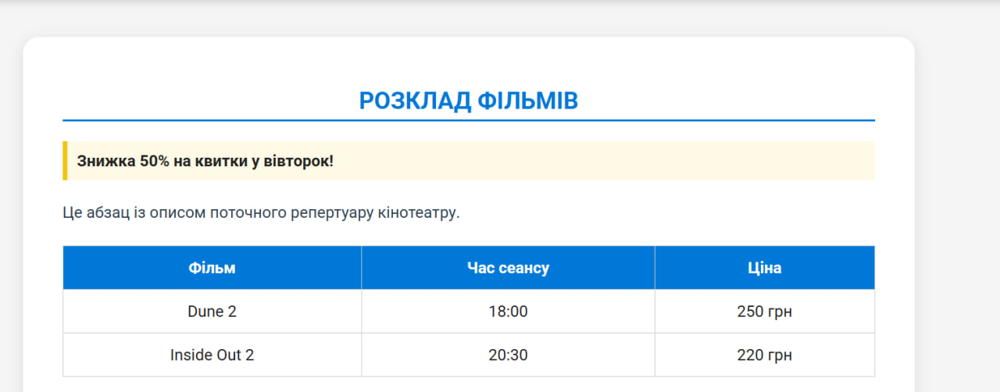
2. Селектори класів
HTML-код:
<div class="highlight">Знижка 50% на квитки у вівторок!</div>
CSS-код:
.highlight {
background-color: #fffae6;
border-left: 5px solid #f1c40f;
padding: 10px;
font-weight: bold;
}
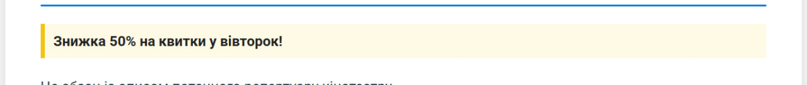
3. Селектори ідентифікаторів
HTML-код:
<h3 id="work-schedule">Розклад роботи
CSS-код:
color: #0078d7;
text-align: center;
border-bottom: 2px solid #0078d7;
padding-bottom: 5px;
margin: 30px 0 20px;
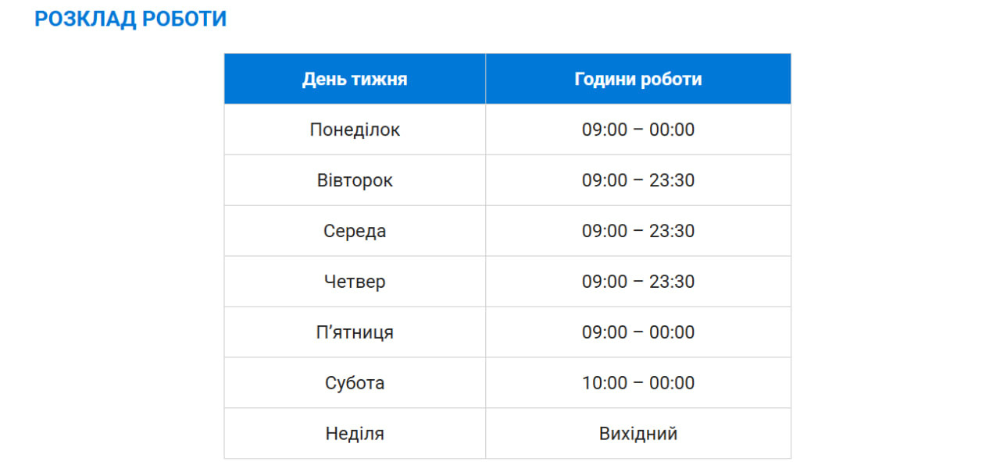
4. Інші селектори
Приклади сусіднього, дочірнього, селектора атрибутів та універсального селектора.
/* Дочірній селектор */
div > p {
color: #34495e;
}
/* Селектор атрибута */
input[type="text"] {
border: 2px solid #0078d7;
border-radius: 6px;
}
/* Універсальний селектор */
* {
box-sizing: border-box;
}
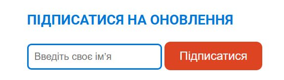
5. Підключення шрифтів (Google Fonts)
Для стилізації тексту підключено шрифт Roboto з Google Fonts:
<link href="https://fonts.googleapis.com/css2?family=Roboto:wght@400;700&display=swap" rel="stylesheet">
body {
font-family: 'Roboto', sans-serif;
}
6. Стильове оформлення текстових елементів
p {
color: #2c3e50;
font-size: 16px;
line-height: 1.6;
}
h1, h2, h3 {
color: #0078d7;
}
table {
border-collapse: collapse;
width: 60%;
}
table, th, td {
border: 1px solid #ccc;
padding: 10px;
}
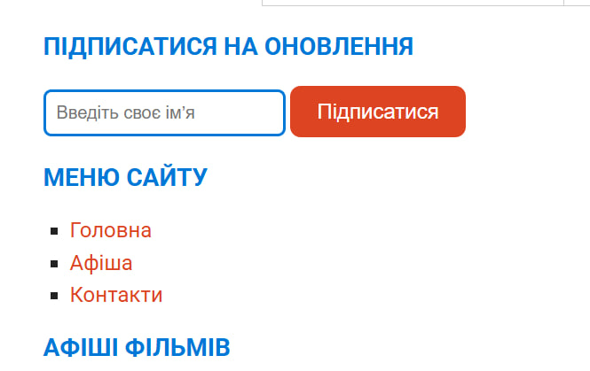
Висновки
Під час виконання лабораторної роботи №2 ми закріпили знання з CSS, навчилися застосовувати різні типи селекторів, працювати зі шрифтами, кольорами, таблицями та елементами сторінки для створення привабливого дизайну.
Лабораторна робота №3
Тема:
Верстка HTML-документу. Верстка засобами CSS та Flexbox.
Мета:
Придбати практичні навички створення адаптивної верстки за допомогою технології Flexbox.
Завдання:
Реалізувати сторінку веб-застосунку “Кінотеатр Онлайн” із двоколонковим макетом (панель новин та основний контент) засобами CSS Flexbox. Додати адаптивність та стилізацію елементів сторінки.
HTML-код:
<section id="lab3">
<h2>Лабораторна робота №3 — Верстка Flexbox</h2>
<div class="flex-container">
<aside class="sidebar">
<h3>Новини кіно</h3>
<p>🎬 Прем’єра “Дюна 3” вже цього тижня!</p>
<p>🍿 Знижка 30% на ранкові сеанси.</p>
</aside>
<div class="content">
<h3>Афіша фільмів</h3>
<div class="posters">
<img src="https://avatars.mds.yandex.net/get-kinopoisk-image/9784475/0c67265b-6631-4e25-b89c-3ddf4e5a1ee7/600x900" alt="Dune 2">
<img src="https://upload.wikimedia.org/wikipedia/en/thumb/f/f7/Inside_Out_2_poster.jpg/250px-Inside_Out_2_poster.jpg" alt="Inside Out 2">
<img src="https://upload.wikimedia.org/wikipedia/en/thumb/8/8a/Avatar_The_Way_of_Water_poster.jpg/220px-Avatar_The_Way_of_Water_poster.jpg" alt="Avatar 2">
</div>
</div>
</div>
</section>
CSS-код:
/* ===== ЛАБОРАТОРНА №3: FLEXBOX ===== */
.flex-container {
display: flex;
flex-wrap: wrap;
gap: 20px;
margin-top: 40px;
justify-content: space-between;
}
.sidebar {
flex: 1 1 250px;
background-color: #fff7f0;
padding: 20px;
border-radius: 10px;
box-shadow: 0 2px 10px rgba(0,0,0,0.1);
}
.sidebar h3 {
color: #d42;
}
.content {
flex: 3 1 600px;
background-color: white;
padding: 20px;
border-radius: 10px;
box-shadow: 0 2px 10px rgba(0,0,0,0.1);
}
.posters {
display: flex;
gap: 20px;
flex-wrap: wrap;
justify-content: center;
}
.posters img {
width: 220px;
border-radius: 10px;
box-shadow: 0 4px 12px rgba(0,0,0,0.2);
transition: transform 0.3s;
}
.posters img:hover {
transform: scale(1.05);
}
Теорія:
Flexbox — це сучасна технологія CSS для побудови гнучких макетів. Вона дозволяє легко розташовувати елементи у ряд чи стовпчик, рівномірно розподіляти простір і адаптувати сайт під різні екрани.
display: flex; — вмикає режим flex-контейнера;flex-wrap: wrap; — дозволяє елементам переноситися на новий ряд;justify-content: — вирівнювання елементів по горизонталі;align-items: — вирівнювання по вертикалі;flex: 1 1 auto; — керує шириною та адаптивністю елементів.
Скріншот результату:
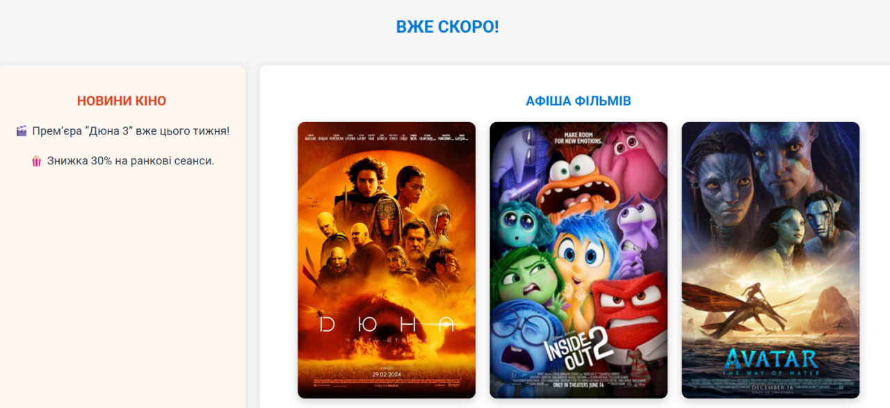
Висновки:
Під час виконання лабораторної роботи №3 ми навчились створювати двоколонкову адаптивну верстку за допомогою Flexbox,
стилізувати контент сторінки засобами CSS, використовувати властивості flex, justify-content, flex-wrap
та оформлювати макет у сучасному стилі для веб-застосунку “Кінотеатр Онлайн”.
Лабораторна робота №4
Демонстрація адаптивної верстки
Нижче представлено приклад реалізації адаптивного веб-дизайну сайту “Movie Time”,
який коректно відображається на десктопах, планшетах та мобільних пристроях.
Для адаптації використано медіа-запити, метатег viewport та підхід Mobile First.
<meta name="viewport" content="width=device-width, initial-scale=1.0">
<div class="container">
<header>Movie Time – адаптивний сайт</header>
<main>
<section class="poster">
<img src="https://upload.wikimedia.org/wikipedia/en/f/f7/Inside_Out_2_poster.jpg" alt="Фільм">
<h3>Inside Out 2</h3>
<p>Психологічна пригода для всієї родини</p>
</section>
</main>
<footer>© 2025 MovieTime</footer>
</div>
Базові стилі (для десктопа):
.container {
max-width: 1000px;
margin: auto;
padding: 20px;
}
.poster {
display: flex;
align-items: center;
gap: 20px;
}
.poster img {
width: 300px;
border-radius: 10px;
}
Адаптивні стилі (медіа-запити):
/* Планшетна версія (до 900px) */
@media (max-width: 900px) {
.poster {
flex-direction: column;
align-items: center;
}
.poster img {
width: 250px;
}
}
/* Мобільна версія (до 600px) */
@media (max-width: 600px) {
body {
font-size: 14px;
background-color: #fffefc;
}
.poster img {
width: 200px;
}
header {
font-size: 1.2rem;
text-align: center;
}
}
Висновок: сайт “Movie Time” коректно масштабується та зручно переглядається
на всіх пристроях завдяки використанню медіа-запитів та метатегу viewport.
Лабораторна робота №5
Лабораторна робота №5
Тема:
Функціональне застосування JavaScript у HTML-документі. Використання масивів у JS-сценаріях.
Мета:
Придбати практичні навички роботи з конструкціями мови JavaScript, масивами та функціями у JS-сценаріях. Реалізувати інтерактивну програму засобами JavaScript.
Посилання:
Завдання №1
Умова: Оголосити функцію getShippingMessage, яка очікує три параметри:
- country — рядок, що містить країну доставки;
- price — загальна вартість товару;
- deliveryFee — вартість доставки.
Функція повинна повертати рядок повідомлення:
"Shipping to <country> will cost <totalPrice> credits"
Програмний код:
// Функція для обчислення загальної вартості доставки
function getShippingMessage(country, price, deliveryFee) {
const totalPrice = price + deliveryFee;
return `Shipping to ${country} will cost ${totalPrice} credits`;
}
// Приклади виклику функції
console.log(getShippingMessage("Canada", 100, 20));
console.log(getShippingMessage("Ukraine", 250, 50));
console.log(getShippingMessage("USA", 300, 40));
Пояснення роботи коду:
- Функція приймає три параметри:
country, price і deliveryFee.
- Змінна
totalPrice обчислює суму замовлення і доставки.
- Через шаблонні рядки (``) створюється повідомлення з підставленими значеннями.
- Результат виводиться в консоль за допомогою
console.log().
Результати виконання (скріншот консолі):
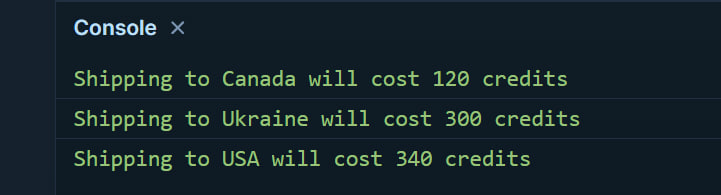
Висновок: Функція коректно формує повідомлення з урахуванням країни доставки та загальної вартості замовлення.
Завдання №2
Умова: Оголосити функцію makeTransaction(quantity, pricePerDroid, customerCredits),
яка формує повідомлення про купівлю ремонтних дроїдів. Якщо сума замовлення перевищує кількість кредитів
на рахунку — повертає "Insufficient funds!", інакше — повідомлення про покупку.
Програмний код:
// Функція для розрахунку покупки дроїдів
function makeTransaction(quantity, pricePerDroid, customerCredits) {
const totalPrice = quantity * pricePerDroid;
if (totalPrice > customerCredits) {
return "Insufficient funds!";
} else {
return `You ordered ${quantity} droids worth ${totalPrice} credits!`;
}
}
// Перевірка роботи функції
console.log(makeTransaction(5, 3000, 20000)); // достатньо коштів
console.log(makeTransaction(10, 5000, 30000)); // недостатньо коштів
console.log(makeTransaction(3, 1500, 5000)); // вистачає
Пояснення роботи коду:
- Функція обчислює загальну вартість замовлення (
quantity * pricePerDroid).
- Порівнює суму з кількістю кредитів клієнта.
- Повертає повідомлення — або про успішну покупку, або про нестачу коштів.
Результати виконання (скріншот консолі):
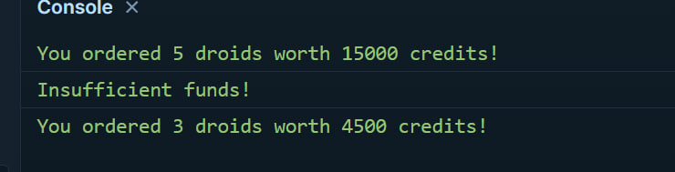
Висновок: Функція коректно перевіряє наявність коштів на рахунку користувача та формує відповідне повідомлення про результат покупки.
Завдання №3
Умова: Написати функцію makeArray(firstArray, secondArray, maxLength),
яка створює новий масив, що містить усі елементи з firstArray і secondArray.
Якщо довжина нового масиву перевищує maxLength, функція повинна повернути копію масиву з довжиною maxLength.
В іншому випадку — повернути весь новий масив.
Програмний код:
// Функція створення нового масиву з обмеженням по довжині
function makeArray(firstArray, secondArray, maxLength) {
const newArray = firstArray.concat(secondArray);
if (newArray.length > maxLength) {
return newArray.slice(0, maxLength);
}
return newArray;
}
// Перевірка роботи функції
console.log(makeArray(["Mango", "Poly"], ["Ajax", "Chelsea"], 3));
console.log(makeArray(["Mango", "Poly", "Houston"], ["Ajax", "Chelsea"], 10));
console.log(makeArray([1, 2, 3], [4, 5, 6], 5));
Пояснення роботи коду:
- Функція об’єднує два масиви за допомогою
concat().
- Перевіряє довжину нового масиву: якщо вона більша за
maxLength, повертає обрізаний масив (slice(0, maxLength)).
- Інакше повертає повний масив без змін.
Результати виконання (скріншот консолі):
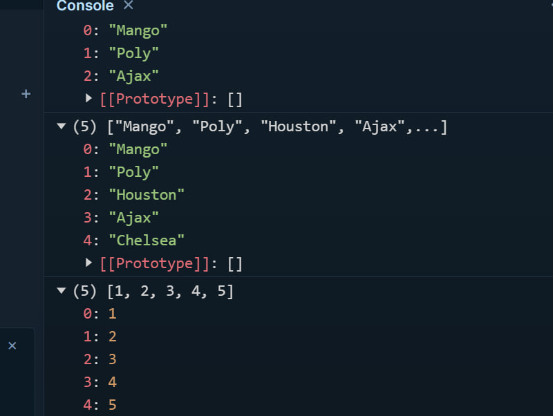
Висновок: Функція makeArray() правильно об’єднує масиви та обмежує довжину результату, якщо потрібно.
Завдання №4
Умова:
- Створити два одновимірні масиви, кількість елементів яких задана користувачем.
- Знайти найменший серед тих елементів першого масиву, які співпадають зі значеннями елементів другого масиву.
- Відсортувати масив у порядку зростання методом бульбашки.
Програмний код:
// Функція створення випадкового масиву заданої довжини
function generateArray(length) {
const arr = [];
for (let i = 0; i < length; i++) {
arr.push(Math.floor(Math.random() * 50) + 1); // числа від 1 до 50
}
return arr;
}
// Функція пошуку найменшого спільного елемента двох масивів
function findSmallestCommonElement(arr1, arr2) {
const common = arr1.filter(num => arr2.includes(num));
return common.length ? Math.min(...common) : null;
}
// Функція сортування методом бульбашки
function bubbleSort(arr) {
const result = [...arr];
for (let i = 0; i < result.length - 1; i++) {
for (let j = 0; j < result.length - i - 1; j++) {
if (result[j] > result[j + 1]) {
[result[j], result[j + 1]] = [result[j + 1], result[j]];
}
}
}
return result;
}
// Основна програма
const length = 6; // кількість елементів у кожному масиві
const array1 = generateArray(length);
const array2 = generateArray(length);
console.log("Перший масив:", array1);
console.log("Другий масив:", array2);
const smallestCommon = findSmallestCommonElement(array1, array2);
if (smallestCommon !== null) {
console.log("Найменший спільний елемент:", smallestCommon);
} else {
console.log("Спільних елементів немає.");
}
console.log("Перший масив після сортування методом бульбашки:", bubbleSort(array1));
Пояснення роботи коду:
- Функція
generateArray() створює масив випадкових чисел заданої довжини.
- Функція
findSmallestCommonElement() знаходить спільні елементи двох масивів і повертає найменший із них.
- Функція
bubbleSort() реалізує сортування масиву у порядку зростання.
Результати виконання (скріншот консолі):
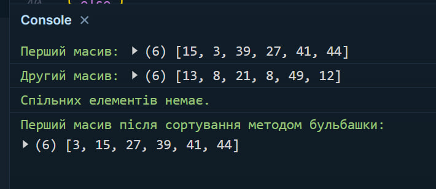
Висновок: За допомогою функцій реалізовано пошук найменшого спільного елемента та сортування масиву методом бульбашки.
Завдання №5
Умова: Реалізувати програму-будильник з основними функціями:
- Увімкнення / вимкнення будильника
- Уведення дати та часу спрацювання
- Виведення повідомлення під час спрацювання будильника
Програмний код:
// === Функція-будильник ===
let alarmTimeout = null;
function setAlarm(dateTime) {
const now = new Date();
const alarmTime = new Date(dateTime);
if (alarmTime <= now) {
console.log("⏰ Неможливо встановити будильник у минулому!");
return;
}
const timeToAlarm = alarmTime - now;
console.log(`Будильник встановлено на: ${alarmTime.toLocaleString()}`);
console.log(`До спрацювання залишилось ${(timeToAlarm / 1000).toFixed(0)} секунд`);
alarmTimeout = setTimeout(() => {
console.log("🔔 Будильник спрацював! Прокидайся!");
alert("🔔 Будильник спрацював! Прокидайся!");
}, timeToAlarm);
}
function cancelAlarm() {
if (alarmTimeout) {
clearTimeout(alarmTimeout);
console.log("❌ Будильник вимкнено.");
alarmTimeout = null;
} else {
console.log("Будильник не було встановлено.");
}
}
// === Приклади використання ===
setAlarm("2025-11-11T15:30:00"); // Установити будильник
// cancelAlarm(); // Вимкнути будильник
Пояснення роботи коду:
- Функція
setAlarm() приймає дату й час у форматі YYYY-MM-DDTHH:MM:SS.
- Розраховується різниця між поточним і заданим часом, після чого запускається таймер
setTimeout().
- Коли час настає — у консолі з’являється повідомлення, а також спливає
alert().
- Функція
cancelAlarm() дозволяє вимкнути активний будильник.
Результати виконання (скріншот консолі):
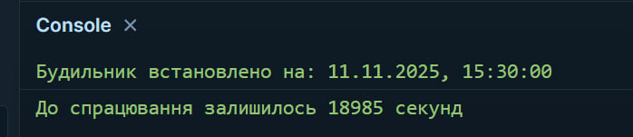
Висновок: Реалізовано програму-будильник, що дає змогу встановлювати час спрацювання, виводить повідомлення та має функцію вимкнення.
Висновки
У ході виконання лабораторної роботи №5 було детально розглянуто практичне застосування мови програмування
JavaScript у HTML-документі. Під час виконання завдань було створено та протестовано кілька функцій,
що демонструють базові можливості мови, принципи обробки даних, взаємодію з масивами, умовні конструкції,
цикли та функції зворотного виклику.
У першому завданні було розроблено функцію для формування повідомлення про доставку товару,
у другому — програму для перевірки можливості здійснення покупки залежно від наявних кредитів.
Третє завдання показало роботу з масивами: об’єднання двох масивів та обмеження довжини нового.
У четвертому завданні реалізовано пошук найменшого спільного елемента двох векторів і сортування
методом бульбашки, що дало змогу закріпити знання алгоритмів обробки даних.
У п’ятому завданні створено функціональний будильник, який використовує об’єкти Date
та методи асинхронного виконання (setTimeout()), що продемонструвало практичне застосування
таймерів і взаємодію користувача із системним часом.
Виконання цієї лабораторної роботи дозволило поглибити розуміння логіки побудови програм,
навчитися працювати з масивами, умовними виразами, циклами та функціями у середовищі JavaScript.
Отримані навички є базовими для подальшого вивчення вебпрограмування, створення інтерактивних елементів
на вебсторінках і розробки динамічних вебзастосунків.
Отже, мету лабораторної роботи — засвоїти принципи функціонального застосування JavaScript у HTML-документі — досягнуто повністю.